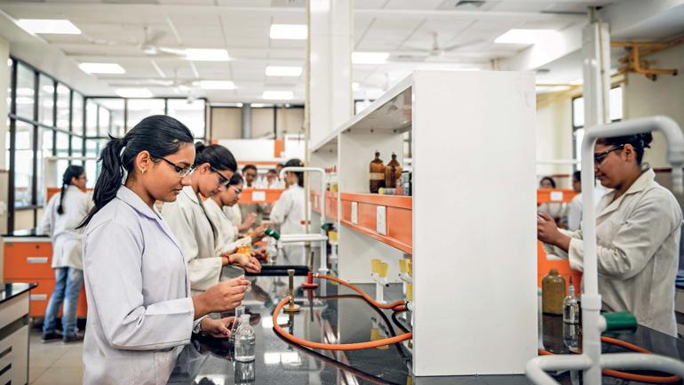
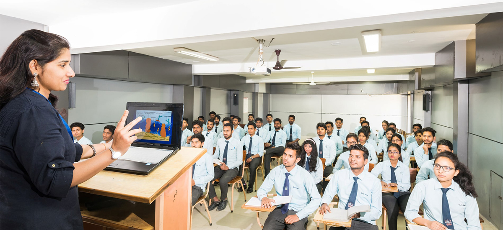

About Us
Bannari Amman Institute of Technology is an Autonomous, Self-financing Engineering College, Approved by AICTE, New Delhi and Affiliated to Anna University, Chennai. Nestled on the banks of The River Bhavani, BIT campus provides environment for learning in harmony with nature, away from the odds of the city life. The spacious and the earth hugging buildings punctuated with landscaped courtyards and pathways are designed to emphasise the business ethics and or characteristics of an excellent centre for learning. The Campus hosts well planned academic blocks, computer centres, lecture halls, libraries, laboratories, conference halls, staff quarters, hostels and students' centres. The Campus also houses a co-operative store, ATM (Axis, SBI and KVB) and a clinic to attend to the general health of the students and staff.

Laboratories
BIT Special Laboratories provide a platform for students to learn, practice, and innovate on the globally sought after skills, beside product development. BIT Special Laboratories established over-and-over the regular labs mandated by the University / AICTE, trains students to participate in internationally reputed competitions. BIT Special Labs Training helps students master both the theoretical foundations and applications in the identified area and makes them skilled enough to participate in competitions at global levels. Exposure to such competitions is highly beneficial in getting employment opportunities in globally reputed industires

Training & Placement
The training and placement team believes in the thought, “The outcome of education is apparent when careers sharpen your horizons” and we strive every minute working on it. Students’ skills are molded through multifarious training sessions that include technical, aptitude, verbal and soft skill. By understanding their level of grasping and delivering, the students are trained individually, based on their needs. To keep pace with the world, multiplicity of career is essential and that drives us to provide training and guidance for those who aspire to crack the competitive exams. The ambience in Training and Placement department is an inspiration, for its spatial dimensions of Interview cubicles, Group Discussion halls and Guest Lounge that render students a complete professional environment to learn and equip. A team of passionate staff work with a single motive for upgrading the students to the next phase of life by all possible means.